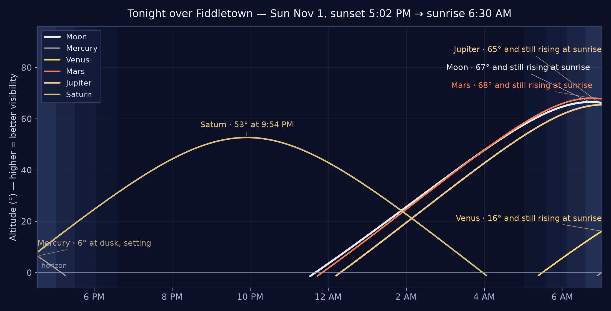
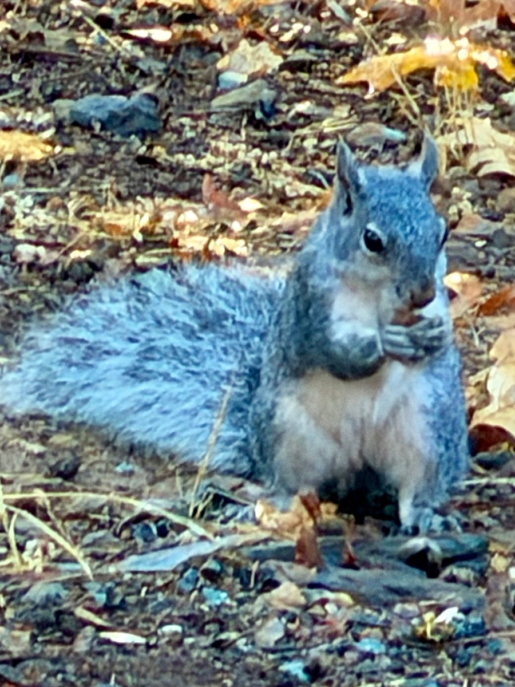
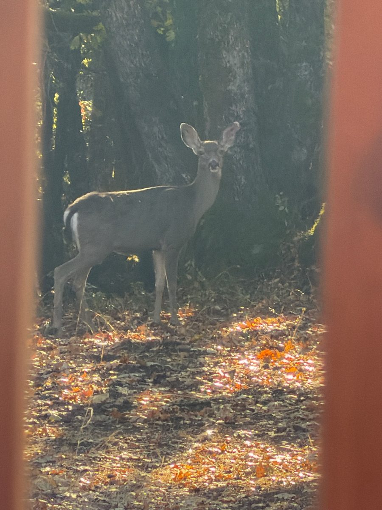

Fiddletown & the Shenandoah Valley · Updated all day
The Fiddletown Gazette
Sunday, November 1, 2026 · Midday Edition — published 12:35 PM PT
🌤️ High 59° · Sunny and clear — no NWS alerts; Tuesday rain now likely, 60% (NWS)
The Lead
Sunday at midday: sun holding, chain control easing uphill, and an afternoon of wine and chamber music still ahead
Sunday has done what the morning promised — sunny, calm, and clear over the foothills, high near 59° this afternoon. No National Weather Service alerts are in effect at midday. Uphill, the picture is easing: Caltrans' noon report narrows the SR-88 chain control to 6.5 miles east of Ham's Station to 5 miles west of Picketts Junction (it ran to Woodfords this morning), while SR-49, SR-124, and SR-16 are clear and SR-89 over Monitor Pass stays closed for snow. The Volcano Farmers Market wrapped up at noon; still ahead this afternoon are Paris Crepes at the Bella Grace wine cave until 3:00 PM, Fraser Family Vineyards' Halloween-weekend finale until 4:00 PM, and the “Voices of Change” chamber concert at Sutter Creek Theatre at 3:00 PM. One forecast change to note: Tuesday's rain chance is up to 60% after 10 AM. Tonight stays the week's best stargazing night — clear, 41°, and moonless until 11:37 PM, with Saturn high in the south.
🚨 Need to Know — the Safety Wire
Weather event — over and staying clear; Tuesday's rain chance rises to 60%. The Halloween storm is gone and Sunday holds sunny: high near 59° this afternoon, easing to around 55°, northwest wind around 6 mph. Tonight is clear, low around 41°. No National Weather Service alerts are in effect for the Fiddletown area at the 12:31 PM check — no warnings, watches, or advisories. The change since morning is Tuesday: rain showers are now likely after 10 AM (60% chance, up from 40%), high near 59°, with a slight chance lingering Tuesday night.
Source: National Weather Service (api.weather.gov), Sacramento forecast for Fiddletown · Checked 12:35 PM PT, Nov 1
Roads — SR-88 chain control narrows; SR-49, SR-124, SR-16 clear; SR-89 Monitor Pass still closed. Caltrans' 12:31 PM report: chains are required on all vehicles except 4-wheel-drive vehicles with snow tires on all four wheels on SR-88 from 6.5 miles east of Ham's Station (Amador Co) to 5 miles west of Picketts Junction (Alpine Co) — the eastern end has pulled back from this morning's Woodfords endpoint. SR-49, SR-124, SR-16, and SR-4 carry no traffic restrictions.SR-89 remains closed from US-395 to SR-4/Monitor Pass due to snow — use an alternate route. Foothill roads themselves are dry and clear.
CHP file — feed unavailable at midday press time; no new foothill closures reported. The CHP incident feed (media.chp.ca.gov) returned a 404 at the 12:33 PM check, so the paper could not re-verify the incident file this edition — Caltrans, above, is the live road authority for this check. This morning's one overnight call in the beat — the 3:26 AM Jackson Valley Road hit-and-run with no injuries — cleared before dawn, and nothing in the morning file touched Fiddletown, Plymouth, Jackson, or Sutter Creek beyond it. The Evening Edition will recheck the feed.
Source: California Highway Patrol incident feed (unavailable at press time, 12:33 PM PT, Nov 1) · Caltrans highway information, 12:31 PM PT, Nov 1
Fire weather — no concerns. Sunny, light winds, and ground still damp from the storm; no Red Flag Warnings. Burn-day status: the paper does not state it — the recorded Burn Day Line in the rail (updated daily 4–5 PM) is the authority; call before lighting any outdoor fire.
Source: National Weather Service, Sacramento · Nov 1
Today in the Foothills
4 public events across the foothills today — at midday, one is done and three are still ahead. Winery events lead, as always at midday: Paris Crepes at the Bella Grace wine cave (until 3:00 PM) and Fraser Family Vineyards' Halloween-weekend finale (until 4:00 PM) are both under way now; the “Voices of Change” chamber concert in Sutter Creek (3:00 PM) is still ahead; the Volcano Farmers Market wrapped up at noon. Two come from the events desk and two from the press-time calendar sweep (Amador Wine Country, Best of Amador). The sweep rechecked amadorwine.com, bestofamador.com, events.lodedown.com, and Visit Amador at midday and found nothing further in the beat for today. One desk item for today sits outside the beat — a San Francisco concert listing — and is not printed.
Paris Crepes pulls up at the wine cave with sweet and savory crepes made fresh in front of the cave, Bella Grace wines poured alongside. Sunday is also Bella Grace's first Club Day of the fall — club members can taste the new releases and pick up wine and olive oil shipments — and it closes out the winery's Nevada Day Weekend. Reserve a table via the Bella Grace email.
Source: events desk (public listing, Bella Grace fall tastings email)
11:00 AM to 4:00 PM · under way now, final day
Halloween Weekend at Fraser Family Vineyards — Final Day
The costume-and-pizza weekend wraps up today: wine tasting and wood-fired pizza, a prize if you come in costume, and pizza complimentary for wine club members.
The Susan Lamb Cook Trio — cello, soprano Carrie Hennessey, and pianist Jennifer Reason — plays American, British, and French music, presented by Mother Lode Friends of Music. $20 donation requested at the door.
The first-and-third-Sundays farmers market on Volcano's Main Street — local produce and shopping in the Gold Rush-era town, running May through December 20 this year. No admission cost stated. Done for today; back on the third Sunday.
Source: events desk (public listing)
The Week Ahead
Today, Sun Nov 1 — Daylight Saving Time ended overnight. Clocks went back one hour at 2:00 AM to Pacific Standard Time. Sunrise today 6:29 AM; sunset 5:03 PM.
Civic note · Nov 1
Tue Nov 3 — Election Day. Polls close 8:00 PM. Return your ballot by mail, drop box, or in person — a ballot returned anywhere in California is forwarded to its home county.
Civic note · Nov 1
Wed Nov 4, 5:00–8:00 PM — Amador All Stars, Feist Wines @ The Drytown Social Club, 15950 Highway 49, Drytown. Weekly local-music showcase — “Local favorites. Every Wednesday.” Free; no RSVP required.
Source: events desk (public listing) · Nov 1
Fri Nov 6, 11:30 AM–2:00 PM — Rob's Food Friday, Bella Grace Vineyards, Plymouth. Chef Rob cooks lunch in the wine cave, with a wine pairing and a view across the vineyard. Lunch is $5 for club members and $10 for everyone else.
Source: events desk (public listing) · Nov 1
Sat Nov 7, 11:00 AM — Fair Play Harvest Festival, Golden Leaves Vineyard & Winery, Somerset. Billed as the Fair Play event of the year; proceeds support the Fair Play Winery Association. Note: the winery's newsletter gives the festival's dates two ways (Nov 6–7 in its text, Nov 7–8 in its heading) — check Golden Leaves before you drive.
Source: events desk (public listing) · Nov 1
Sat Nov 7, 5:15 PM — Peace Officer & Citizen of the Year Awards Banquet, American Legion Hall, Sutter Creek. $45; tickets in advance only, none at the door.
Free dance instruction 6:15–7 PM (Dave and Alecia West), then the show at 7 PM. $20 advance / $25 door. Questions: Bob Hines · info@fiddletowncc.org.
Source: flyer sent by Nan (Fiddletown Community Center) · printed Nov 1
Sun Nov 8, 11:00 AM–5:00 PM — Art & Wine Stroll in Sutter Creek, Main Street, Sutter Creek. Six tasting rooms turn into galleries for the day; at Bella Grace's tasting room, meet painter Ron Antone and taste the 1646 Red Blend with a Tuscan squash soup. Tickets are $40.
Source: events desk (public listing) · Nov 1
📜 This Day in History — Nov 1
⭐ From our own hills — the Gold Rush gateway, 1848: on this day John Sutter Jr. announces plans for Sacramento City, at the junction of the American River and the Sacramento River. Gold had been found up the American at Sutter's Mill that January; the town announced today becomes the embarcadero every Mother Lode camp — Fiddletown included — is supplied through, and the door the forty-niners pour through into our hills.
1776 — Mission San Juan Capistrano is dedicated by Father Junípero Serra, the 7th of Alta California's 21 missions — famous since for its 1812 earthquake ruins and the swallows that return each March.
1919 — California ratifies the 19th Amendment on this day, the 18th state to do so — putting the national campaign halfway to the 36 states needed. California women had already won the vote in state elections in 1911.
1910 — San Diego's City Park becomes Balboa Park, renamed for Vasco Núñez de Balboa as the city prepares for the Panama-California Exposition.
Wider page: 1512 Michelangelo's Sistine Chapel ceiling is first shown to the public · 1938 Seabiscuit beats War Admiral in the great Pimlico match race.
The editor dug back to 1848 for this date in our hills, as the publisher directed: no verified Fiddletown or Amador event falls on Nov 1 in the Gold Rush years — today's highlight is our watershed and supply gateway, and the box says so plainly. Sources: This Week in California History · CalExplornia, California History in November · Almanack On This Day
🔭 Star Chart — Tonight over Fiddletown

Tonight over Fiddletown — the Moon and visible planets, sunset to sunrise. Higher on the chart = higher in the sky = easier to see. (Chart: the Gazette sky desk, computed for Fiddletown.)
Tonight's chart (~8 PM, facing south):Saturn is the evening show — already about 44° up in the southeast at 8 PM and climbing past 50° by 10 PM, shining steady in Cetus. The Great Square of Pegasus rides high overhead, Cassiopeia climbs in the northeast, the Summer Triangle sinks in the west, and Fomalhaut glows low in the south. Orion rises in the east late in the evening. The evening is moonless — the Moon doesn't rise until 11:37 PM.
🌗 Moon:last quarter today, Nov 1 — almost exactly half lit (~50%). It sets at 1:11 PM and rises at 11:37 PM, so the whole evening is properly dark.
Planets up:Saturn takes the evening — high in the south all evening, its rings nearly edge-on this season. Jupiter and reddish Mars rise late, around 11 PM to midnight, and are brilliant before dawn, joined after 11:37 PM by the last-quarter Moon. Venus is a pre-dawn object only, low in the east around 6 AM.
Notable: the Southern Taurids — the slow, bright “fireballs” — are active and peak Nov 4–5; the Orionids wind down through Nov 7.
Viewing note: the best night in days, honestly — the storm has cleared, the National Weather Service calls tonight clear with a low around 41°, and the Moon stays down until 11:37 PM. Dress warm, look south, and give Saturn its evening.
Sources: Gazette sky desk (skyfield, computed for Fiddletown) · NWS Sacramento (conditions) · Checked Nov 1
🐦 On the Wing
THE GAZETTE'S BIRD-WATCHING DESK — FIRST SIGHTING
Northern Flicker, red-shafted form — a male. Filmed from a Fiddletown deck on Halloween morning, hitching up a trunk in a tree gone full fall red, pines behind. Watch for the field marks: the brown back barred with black, the spotted cream breast, the gray face — and, because he's a he, the red mustache stripe.
54 seconds · Filmed by the publisher, Fiddletown, Halloween morning
The flicker is the West's own: in flight, the underwings and tail flash salmon-red — that's the “red-shafted” part. One of our larger woodpeckers at about 11 inches long with a 17-inch wingspan, and a year-round resident of Amador County's foothill woodland.
He's also the family oddball: flickers spend much of their lives on the ground, hunting ants — they eat more ants than almost any other North American bird. Up a trunk, as here, he braces with that stiff tail and probes the bark. Listen for him before you see him: a loud rolling wick-a-wick-a-wick-a, and a sharp klear!
On the Wing is the Gazette's new bird desk — sightings from the foothills, town name is as precise as we get. Send yours through the Suggestion Box. · Sighting: Fiddletown, Oct 31
LOCAL CRITTER SIGHTINGS — A NEW DESK, NAME TBD BY POPULAR VOTE
The foothills are full of neighbors who don't read the paper: deer in the garden, turkeys in the road, the occasional bobcat acting like it pays taxes. This desk will carry their sightings — photos, footage, and field notes, town name only, as always. But a desk needs a name, and the Editor declines to choose alone. Herewith, the ballot — ten candidates. Tap Vote on your favorite (it opens an email, pre-filled; that's the ballot box — the paper collects nothing itself). The count so far runs under the ballot, and the winning name takes the masthead.
🐿️ Breakfast, Held in Both Paws
SIGHTING No. 3 FOR THIS DESK · SUN NOV 1, 2026 · PHOTOGRAPHED IN FIDDLETOWN, SUNDAY MORNING

One of our squirrel neighbors, hiding his nuts — and no, he won't say where. 📷 Dave Dell'Aquila, Fiddletown — Sun Nov 1.
Field notes: The doe wasn't the only one keeping Sunday hours. This is the household's squirrel friend — a western gray squirrel, the foothills' native, all silver-gray coat and cream belly with a tail like a feather duster — sitting up in the fallen oak leaves with breakfast held properly in both paws. The acorn crop is down, the storm has scrubbed everything clean, and the winter stores aren't going to gather themselves. Photographed this morning, filed as this desk's third sighting, and No. 4 in the Sightings Archive.
Photo & sighting: Dave Dell'Aquila · Fiddletown · Sun Nov 1, 2026
🦌 The Morning Visitor
SIGHTING No. 2 FOR THIS DESK · SUN NOV 1, 2026 · PHOTOGRAPHED IN FIDDLETOWN, SUNDAY MORNING

Caught between the porch rails: a doe in the oaks, holding the photographer's eye. 📷 Dave Dell'Aquila, Fiddletown — Sun Nov 1, about 7:30 AM.
Field notes: First morning of standard time, and the neighborhood was already up. A young doe — a black-tailed deer, the foothills' own — stood broadside among the oaks in the fallen leaves, ears up, looking straight down the lens through the porch railing, in no hurry at all. The storm's gone, the leaves are down, and the acorn crop is hers for the browsing. She posed, she considered, and then she went about her Sunday. Filed as this desk's second sighting, and No. 3 in the Sightings Archive.
Photo & sighting: Dave Dell'Aquila · Fiddletown · Sun Nov 1, 2026
🦝 The Night Shift, Caught by the AstroTurf
SIGHTING No. 1 FOR THIS DESK · SAT OCT 31, 2026 · FILMED BY DAVE DELL'AQUILA, FIDDLETOWN
Night-vision footage, six seconds: raccoons foraging the garden bed by the AstroTurf — filmed by Dave Dell'Aquila, received Oct 31. Logged as entry No. 2 in the Sightings Archive.
The desk opens its books with the neighborhood's night shift: raccoons — a family party, at least two and likely three — working the garden bed by the AstroTurf in the small hours. Grizzled backs down, noses in the planting bed by the white garden flower, prospecting for grubs, insects, and whatever the garden gives up in late October; one sits up at the bed's edge to survey the water, then the whole crew carries on into the dark, unhurried.
Raccoon kits travel with their mother well into fall, which is what this looks like: a family working a route together. Masked, ring-tailed, and equipped with the cleverest hands in the neighborhood, autumn raccoons are eating for winter — admire from the deck, secure the pet food, and give the night shift its room.
Correction, Oct 31: this desk first named the visitor a striped skunk — a grizzled back in two tight frames read as a skunk's stripe. The frame-by-frame recheck (and the publisher's own eye) found no white stripe anywhere, and more than one animal. The record stands corrected, and the desk thanks its readers who catch what it misses.
Ballot open · 2 votes counted · The count refreshes with each edition. One vote per reader — the Editor trusts the foothills.
Sightings are open: send yours through the Suggestion Box below — every logged sighting joins the Sightings Archive.
The Critter Desk opened Oct 31, 2026 · Birds keep their own desk at On the Wing, above
✉️ Nan's Corner
OUR FOUNDING CONTRIBUTOR
The Gazette has a correspondent. Nan Dell'Aquila writes this corner — dispatches, notes, and observations from her side of the foothills — filed by email and printed under her byline, as she sends them. (Her cooking lives in Nan's Recipe Corner, over in the rail; this corner is for everything else.)
Chicken Parmesan Rolls
By Nan Dell'Aquila · Sun Nov 1, 2026
Sunday's filing from Nan is a main dish with a track record: Chicken Parmesan Rolls — crumbed chicken rolled around mozzarella and basil, baked in marinara. Her card carries her own verdict from October 21, when she cooked it: delicious, easy, and a good one for a small group over pasta. It runs in full in Nan's Recipe Corner, photo included and tappable to the original, per her standing request.
Updated Nov 1 — Nan's Halloween-night note, added at her request: “We had a wonderful Halloween night hunkered in with Rachel and Robin. We toasted to the evening with a Bourbon Maple Old Fashioned (yum!), watched a scary movie and made this delicious version of chicken parm. It was easy to partially prepare ahead of time, making the chicken rolls and keeping them in the fridge. When I was ready to cook them I dipped them in the egg and breadcrumbs and followed the final steps before baking them. It is a great meal to make for a group and tasted absolutely delicious 😋”
Nan's second filing of the day swaps the oven for the cocktail shaker: a Bourbon Maple Old Fashioned, straight from her recipe card — bourbon, maple syrup, and bitters, shaken twenty times and poured over one big cube. It runs in full in Nan's Recipe Corner, photo included and tappable to the original, per her standing request.
Nan's first piece for the paper arrived the way her best things do — no preamble, just the goods: a link to her recipe card for Pecan Pie Brownies. It runs in full in Nan's Recipe Corner, over in the rail. Welcome to the masthead, Nan.
THE DAILY CHUCKLE — PLUS A RIDDLE, ANSWERED TOMORROW
Today's joke: Why did the scarecrow win an award? …Because he was outstanding in his field.
Yesterday's riddle: The person who makes me has no need of me; the person who buys me has no use for me; the person who uses me can neither see nor feel me. What am I? — Answer: A coffin.
Today's riddle: What has many keys but can't open a single lock?
The answer runs in tomorrow's paper — the Gazette keeps a riddle overnight, the way it should be. Think on it.
📬 Get the joke by mail — join The Joke Vault. The Gazette's jokes have a sister act: one joke and one riddle by email, every day. Two doors in:
• By email: send a message with the subject “Joke Vault JOIN” to dave@dellaquila.com — tap that link and the subject fills itself in.
No account, no cost — one email a day, and reply STOP anytime to leave.
📬 The Suggestion Box
Feedback, comments, corrections, and story tips for this edition — all welcome. Tell us what the paper got right, what it missed, and what it should cover next.
How it works: the Gazette is a static page with no accounts and no comment storage — the button opens your own email app with your note addressed to the editor, and you press send there. Nothing is collected by this page. Prefer to write directly? dave@dellaquila.com